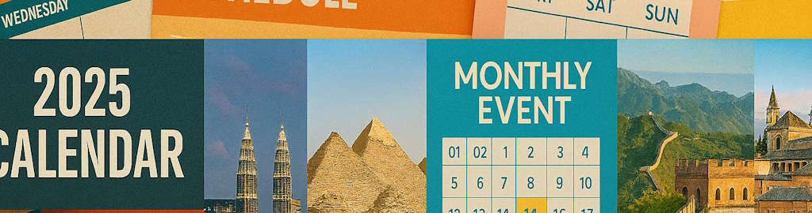

Programa de Actividades

El programa de BIRTLH ExpoViajes 2025 ha sido diseñado para ofrecer una experiencia completa tanto a profesionales del sector como a visitantes interesados en descubrir nuevos destinos. Durante toda la jornada se desarrollarán conferencias, talleres, presentaciones y actividades interactivas.
Nota importante: Todas las actividades están incluidas en la entrada gratuita. Algunas conferencias requieren inscripción previa debido al aforo limitado.
Programa de Mañana (09:00 - 14:00)
| Hora | Actividad | Ubicación | Tipo |
|---|---|---|---|
| 09:00 - 09:30 | Apertura oficial y bienvenida | Auditorio Principal | Ceremonia |
| 09:30 - 10:30 | Conferencia: "Tendencias del turismo post-pandemia" | Sala de Conferencias A | Conferencia |
| 10:30 - 11:00 | Pausa café y networking | Zona de Expositores | Networking |
| 11:00 - 12:00 | Taller: "Turismo sostenible y responsable" | Sala de Talleres B | Taller |
| 12:00 - 13:00 | Mesa redonda: "Destinos emergentes 2025" | Auditorio Principal | Mesa redonda |
| 13:00 - 14:00 | Presentaciones de destinos internacionales | Zona de Expositores | Presentación |
Programa de Tarde (14:00 - 20:00)
| Hora | Actividad | Ubicación | Tipo |
|---|---|---|---|
| 14:00 - 15:00 | Pausa para almuerzo | Zona de Restauración | Descanso |
| 15:00 - 16:00 | Conferencia: "Marketing digital en turismo" | Sala de Conferencias A | Conferencia |
| 16:00 - 17:00 | Taller: "Fotografía de viajes para redes sociales" | Sala de Talleres B | Taller |
| 17:00 - 18:00 | Sorteo de viajes y premios | Auditorio Principal | Sorteo |
| 18:00 - 19:30 | Actividades interactivas y degustaciones | Zona de Expositores | Actividad |
| 19:30 - 20:00 | Clausura y agradecimientos | Auditorio Principal | Clausura |